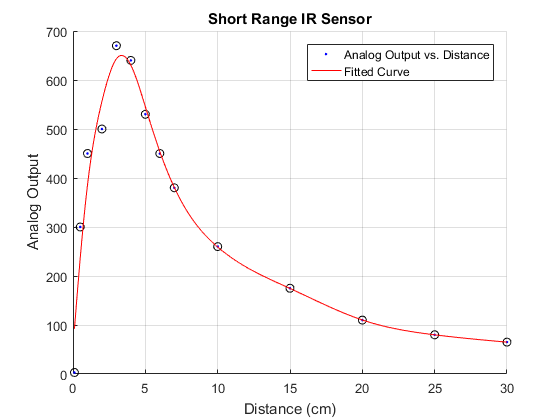
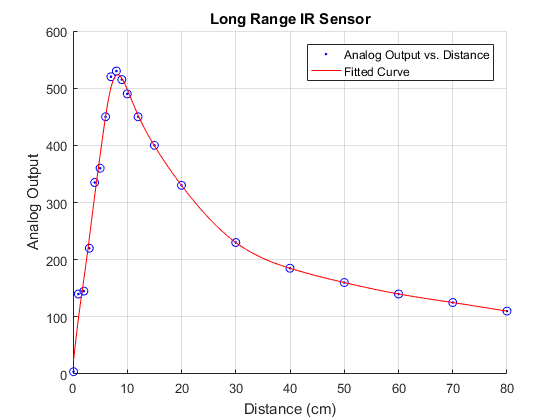

Sensor Calibration and Curve Fit
Contents
Short Range IR Sensor Data
clear all;
clc;
d = [0.1, 0.5, 1, 2, 3, 4, 5, 6, 7, 10, 15, 20, 25, 30];
a = [3, 300, 450, 500, 670, 640, 530, 450, 380, 260, 175, 110, 80, 65];
figure(1); clf; hold on;
plot(d, a, 'ko');
title('Short Range IR Sensor');
xlabel('Distance [cm]'); ylabel('Analog value');
createFit(d,a);

Long Range IR Sensor Data
clear all;
clc;
d = [0.1, 1, 2, 3, 4, 5, 6, 7, 8, 9, 10, 12, 15, 20, 30, 40, 50, 60, 70, 80];
a = [4, 140, 145, 220, 335, 360, 450, 520, 530, 515, 490, 450, 400, 330, 230, 185, 160, 140, 125, 110];
figure(2); clf; hold on;
plot(d, a, 'bo');
title('Long Range IR Sensor');
xlabel('Distance [cm]'); ylabel('Analog value');
createFit(d,a);

createFit.m function
createFit.m
function [fitresult, gof] = createFit(d, a)
[xData, yData] = prepareCurveData( d, a );
ft = fittype( 'smoothingspline' );
[fitresult, gof] = fit( xData, yData, ft, 'Normalize', 'on' );
h = plot( fitresult, xData, yData );
legend( h, 'Analog Output vs. Distance', 'Fitted Curve', 'Location', 'NorthEast' );
xlabel('Distance (cm)');
ylabel ('Analog Output');
grid on